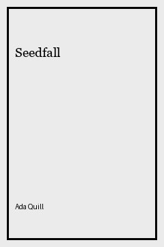

Actual KOReader + companion on a dedicated Android 14 ARM64 emulator, 1404×1872 at 300 dpi. The tools/e2e fake ServerAdapter is the only server seam; no live BookOrbit service or physical reader was used. Mockups are copied from the approved source shots.
Fixture: 60 synthetic EPUBs with embedded jacket PNGs and zero sidecar covers, six in progress, five finished, series, and 50 days of per-book timed page history. “New horizons” was added after the initial 59-book scan. Its first-seen timestamp puts it first in Recently added. A separate PDF and CBZ were used for extraction proof, then removed. Original captures and receipts remain beside this gallery.
Verified: extracted EPUB jackets in the hero and rows; a filled Recently added card; a newly observed EPUB selected first. Full-resolution capture · Recently added crop.
Remaining: existing header controls, sans title face, cover-box proportions, row count/spacing, missing series/forecast presentation, list controls, storage styling and pagination differ from the mockup. They are screen renderer work owned by other slices; X2 changes only data and deferred acquisition. Account lists are absent in this deliberately signed-out local-library proof. Fixture book names and artwork differ from the mockup.
Verified: 750 min reading time · 12 pages read, joined through the normal local reader projection. The unfinished book correctly has no days-start-to-finish statistic. Full-resolution capture · Stats crop.
Remaining: the existing panel has no cover/description composition and uses generic buttons and a top sheet with different typography and spacing. These renderer differences are outside this data-only slice. Its existing “Days start to finish: not saved yet” wording remains unchanged for the unavailable unfinished-book value.
Android extraction checks
PDF: real Android first-page rendering.

CBZ: natural page order picks 2.png before 10.png.
KOReader’s cover APIs require its in-process document providers. Calling those on its UI thread would violate the companion-worker rule. X2 uses Android PdfRenderer and bounded ZIP reads instead. EPUB covers use OPF cover metadata or manifest cover-image, with first-spine-page raster fallback. Pure vector/SVG-only artwork remains a bitmap-decoder limitation and uses the existing placeholder.
No screen styling was changed. The source PR includes regression tests for persistence/order, stats/unfinished completion, bounded extraction, cover selection, invalidation and deferred delivery cancellation.